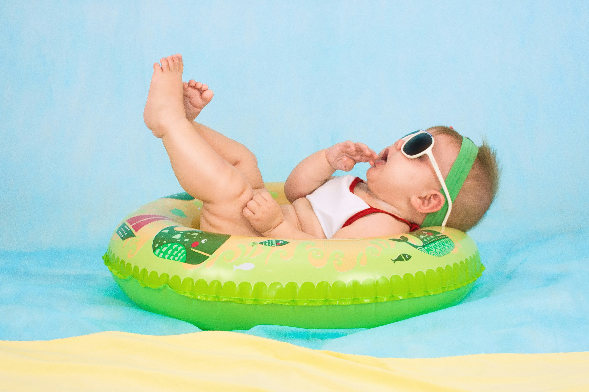

Bienvenue chez Trouve ton Baby Spa
C'est quoi un Baby Spa ?
Un baby spa est un espace spécialement conçu pour offrir aux nourrissons des soins de bien-être doux
et adaptés à leurs besoins, dans un cadre apaisant et sécurisé. Le concept repose sur l’utilisation
de l’eau et du massage pour créer une expérience relaxante, inspirée des bienfaits de la thalassothérapie
et de l’hydrothérapie. Au sein d’un baby spa, les bébés bénéficient de séances de flottement en eau
chaude, souvent équipés de flotteurs spécialement conçus pour soutenir leur tête, leur permettant de
se mouvoir librement et en toute sécurité.
Cette immersion dans l’eau aide à détendre leurs muscles,
soulager les tensions et favoriser leur motricité. Après le bain, les séances de massage complètent
le soin en apportant détente et stimulation sensorielle. En plus de ces bienfaits physiques, le baby
spa offre aux parents un moment de complicité unique avec leur enfant, contribuant à renforcer le lien
affectif et à créer des souvenirs inoubliables dans une atmosphère de calme et de bien-être.
Les différents soins pour Bébé
Dans un baby spa, plusieurs types de soins peuvent être proposés pour répondre aux besoins spécifiques des nourrissons et favoriser leur bien-être global :
- Hydrothérapie pour bébés : Une séance de flottement en eau chaude, où le bébé, équipé d’un flotteur spécialement adapté, peut bouger librement. Cette pratique aide à renforcer les muscles, améliore la coordination et procure un sentiment de relaxation en réduisant les tensions corporelles.
- element 1
- element 2
- element 3
- element 4
- element 5
L'importance des soins
Les soins pour bébés dans un baby spa offrent des bienfaits essentiels pour le bien-être
et le développement des tout-petits. En combinant des techniques de massage doux et d’hydrothérapie,
ces séances stimulent le développement musculaire et moteur des nourrissons, favorisant ainsi leur
coordination et leur motricité. L’eau chaude et enveloppante apaise les tensions corporelles, aide à
réduire les coliques et les inconforts digestifs, et contribue à un meilleur sommeil, un élément crucial
pour le développement cognitif et physique de bébé.
Par ailleurs, ces moments privilégiés créent un
lien apaisant entre le bébé et ses parents, renforçant la relation affective et la confiance mutuelle.
L’ambiance calme et sécurisante du baby spa, couplée aux gestes professionnels de praticiens formés, offre aux bébés
une expérience unique et bénéfique, leur permettant de grandir en pleine sérénité tout en renforçant
leur bien-être global.